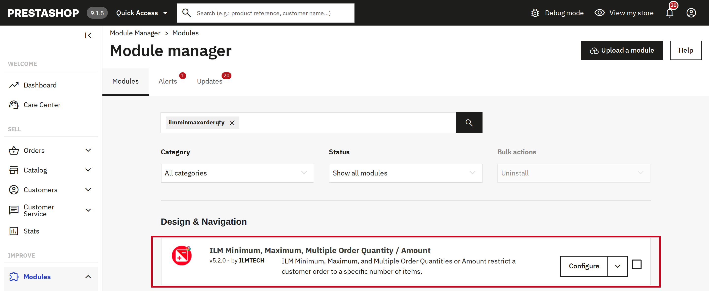
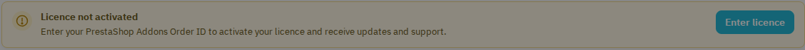
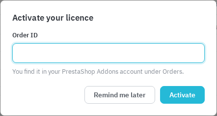

Step 1: Download ilmminmaxorderqty.zip
Step 2: Go to Backoffice > Modules > Module Manager > Upload a module > choose the ilmminmaxorderqty.zip file to upload.
Step 3: Search for ilmminmaxorderqty in the Module Manager and confirm it is listed as installed, then click Configure.

The module listed in Module Manager, ready to configure.
Upgrading: upload the new ilmminmaxorderqty.zip the same way, over the installed module. PrestaShop runs the module's upgrade on its own; your rules, Duration Rules, messages and settings are kept. If the files are copied to the server another way (FTP, a deployment), the module adds any new database columns itself on the first page load.
Since version 5.3, the Configure screen shows a licence bar above the tabs. Click Enter licence and type the Order ID of your purchase: the order reference on ilmtech.in (in your order e-mail and under My account > Order history), or the Order ID in your PrestaShop Addons account under Orders. The licence gives you updates and support. Remind me later closes the window without activating; the module keeps working.


The licence bar and the activation window.
Once activated, the bar shows the order, the shop domain and the date until which support and updates run. If the shop moves to another domain, the bar offers Move licence to this domain; Remove licence from this shop frees the licence for another shop. Only employees who may uninstall modules can change the licence.